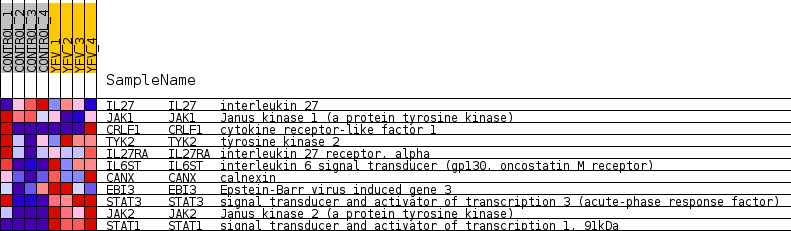
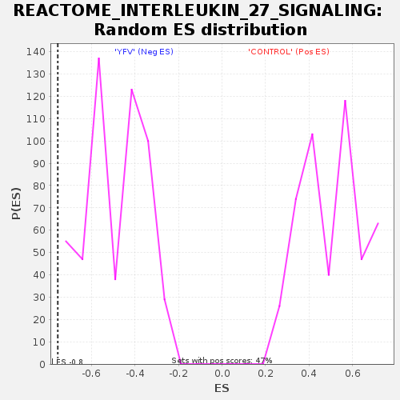

Profile of the Running ES Score & Positions of GeneSet Members on the Rank Ordered List
| Dataset | MATRIZ_GSE99081_collapsed_to_symbols.gsea_CLASE_99081.cls#CONTROL_versus_YFV |
| Phenotype | gsea_CLASE_99081.cls#CONTROL_versus_YFV |
| Upregulated in class | YFV |
| GeneSet | REACTOME_INTERLEUKIN_27_SIGNALING |
| Enrichment Score (ES) | -0.7544812 |
| Normalized Enrichment Score (NES) | -1.5339634 |
| Nominal p-value | 0.0 |
| FDR q-value | 0.11605784 |
| FWER p-Value | 1.0 |
| SYMBOL | TITLE | RANK IN GENE LIST | RANK METRIC SCORE | RUNNING ES | CORE ENRICHMENT | |
|---|---|---|---|---|---|---|
| 1 | IL27 | interleukin 27 | 3473 | 0.291 | -0.1806 | No |
| 2 | JAK1 | Janus kinase 1 (a protein tyrosine kinase) | 5037 | 0.156 | -0.2590 | No |
| 3 | CRLF1 | cytokine receptor-like factor 1 | 9538 | -0.005 | -0.5357 | No |
| 4 | TYK2 | tyrosine kinase 2 | 10673 | -0.073 | -0.5973 | No |
| 5 | IL27RA | interleukin 27 receptor, alpha | 11140 | -0.114 | -0.6129 | No |
| 6 | IL6ST | interleukin 6 signal transducer (gp130, oncostatin M receptor) | 13439 | -0.357 | -0.7136 | Yes |
| 7 | CANX | calnexin | 14096 | -0.462 | -0.7010 | Yes |
| 8 | EBI3 | Epstein-Barr virus induced gene 3 | 14601 | -0.517 | -0.6728 | Yes |
| 9 | STAT3 | signal transducer and activator of transcription 3 (acute-phase response factor) | 15310 | -0.748 | -0.6306 | Yes |
| 10 | JAK2 | Janus kinase 2 (a protein tyrosine kinase) | 16053 | -1.843 | -0.4650 | Yes |
| 11 | STAT1 | signal transducer and activator of transcription 1, 91kDa | 16215 | -4.153 | 0.0015 | Yes |

